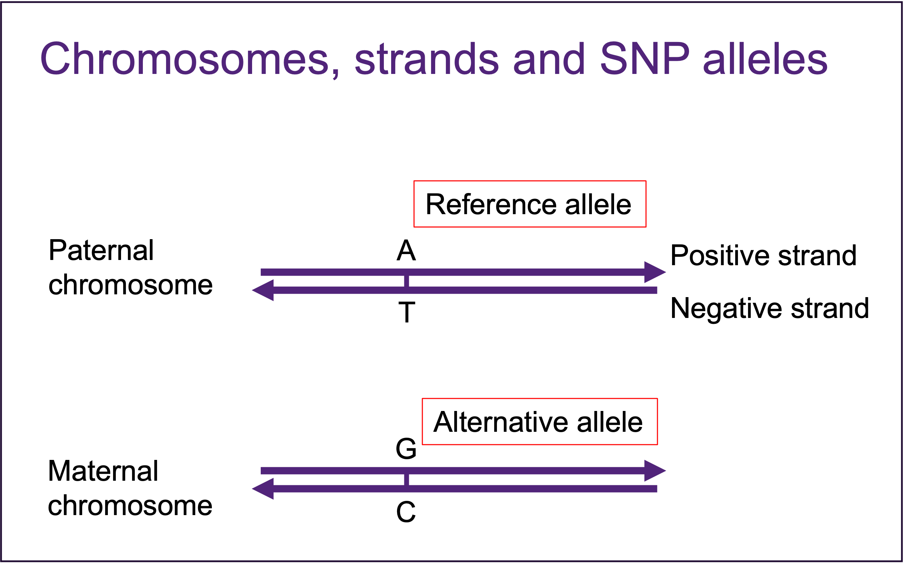

Two CEPH samples were used as technical control in HSU lab. They were genotyped with each batch of samples processed and genotyped in the lab. Genotype data were exported into Plink format, includes a MAP file and PED file, using Genome Studio.
We have developed an in-house pipeline for processing the raw plink data all the way to profiling their GPS of interested traits.
We usually transfer the data to binary format to save space and accelerate calculation speed.
plink \
--file ${inpath}/${data} \
--make-bed --out ${dir}/Original/${data}This format is explained well in plink manual page.
Since the sample size in each batch is very small, a lot of SNPs didn’t get alternative alleles in the data. We filled in the alternative allele in bim file by matching to the strand file of the chip.
args=commandArgs(trailingOnly = T)
bim.file = args[1]
strand.file = args[2]
bim = read.table(bim.file)
strand.A = read.table(strand.file)
bim$strand = strand.A[match(bim$V2, strand.A$V1),"V6"]
bim$index = c(1:nrow(bim))
bim.tofill = bim[(bim[,"V5"] == 0 & bim[,"V6"] != 0 & bim[,"strand"]%in%
c("AT", "CG", "AC", "AG", "CT", "CA","GA", "GT", "GC","TA","TC","TG" )), ]
bim.nottofill = bim[!bim$V2%in%bim.tofill$V2,]
for(i in 1:nrow(bim.tofill)){
bim.tofill[i,"V5"] = gsub(bim.tofill[i,"V6"], "" , bim.tofill[i, "strand"])
}
bim.c = rbind(bim.tofill, bim.nottofill)
bim.c = bim.c[order(bim.c$index),]
write.table(bim.c[,1:6], file=paste0(bim.file, "_missing_filled.txt"),
quote = F, sep ="\t", row.names = F, col.names = F)We use Plink to generate summary stats at per-SNP and per-individual levels.
plink --bfile ${dir}/Original/${data} --missing --out ${dir}/Original/${data}
plink --bfile ${dir}/Original/${data} --freq --out ${dir}/Original/${data}
plink --bfile ${dir}/Original/${data} --hardy --out ${dir}/Original/${data}We used R to read in and make histograms of the summary statistics.
filename="target"
imiss <- read.table(paste0(filename,".imiss"), header=T, check.names=F)
lmiss <- read.table(paste0(filename,".lmiss"), header=T, check.names=F)
freq <- read.table(paste0(filename,".frq"), header=T, check.names=F)
hwe <- read.table(paste0(filename,".hwe"), header=T, check.names=F)
# You can either run the plotting function in interactive Jupyter R.
# Or un-mute the png and dev.off command lines to save the picture.
#png(paste0(filename,"_Quality_of_genotype.png"), type="cairo")
par(mfrow=c(2,2))
hist(1-imiss$F_MISS, breaks="sturges",main="Individuals",col="tan",
xlab="Genotyping Rate", ylab="Number of Individuals")
hist(1-lmiss$F_MISS, breaks="sturges", main="SNPs", col="tan",
xlab="Genotyping Rate", ylab="Number of SNPs")
hist(hwe$P, breaks="sturges", main="HWE P-Value", col="tan",
xlab="HWE P-value", ylab="Number of SNPs")
hist(freq$MAF, breaks="sturges", main="MAF", col="tan",
xlab="MAF", ylab="Number of SNPs")
#dev.off()As a very useful way to confirm that the samples were not messed up in handling, we predict sex from heterozygosity in chromosome X, and compare it to the sex in phenotype column in the fam file.
A PROBLEM arises if the two sexes do not match, or if the SNP data or pedigree data are ambiguous with regard to sex. More details are in plink manual page.
We need chrX to do this check, but our predictor data has only autosomes, so we will leave out the X chromosome in next step.
# don't run this chunk with practical data. it does not have X chromosome
plink --bfile ${dir}/Original/${data} --check-sex --out ${dir}/Original/${data}The chips don’t always have probes on the positive strands. We have to flip all the SNPs on minus strand to positive strand for matching to reference data. Strand website has prepared strand files for a lot of chips. We downloaded the strand data for each chip we used, and used the update_build.sh tool to flip the strands.

plink --bfile ${dir}/Original/${data} --flip ${refdir}/$strand --recode --make-bed --out ${dir}/Original/flipped_${data}In QC step, we use Plink to exclude the SNPs and individuals with high missingess, very low MAF, and SNPs that violate Hardy-Weinberg Equilibrium.
plink \
--bfile ${dir}/Original/lipped_${data} \
--mind 0.05 \
--geno 0.05 \
--hwe 0.000001 \
--make-bed \
--maf 0.01 \
--out ${dir}/Original/cleaned_flipped_${data}Parameters in the command:
–mind: missingness per individual threshold
–geno: missingness per SNP threshold
–hwe: Hardy-Weinberg Equilibrium p-value threshold
–maf: Minor allele frequency thresohld
It’s very often that our target data set has a small sample size, around one or two hundred. Some cross-sample QC methods don’t work very well in this circumstance. We made a QCed SNP list from pooled samples, and use it to extract high quality SNPs from small batches.
plink --bfile ${dir}/Original/flipped_${data} \
--mind 0.05 \
--chr 1-22 QCedSNPs_Preimputed.txt \
--make-bed \
--out ${dir}/Original/cleaned_flipped_${data}There are several online imputation servers you can use to impute your data, such as TOPMED imputation server and Sanger imputation server. Here we will use open resource tools and the reference data 1000Genome to do it in-house.
We will convert the data from PLINK format to VCF format, and use BCFTools to align the reference alleles as used in human genome reference data.
chr=22
# Pull out data for relevant chromosome and convert to VCF.
plink --bfile ${data}_chr${chr} --recode vcf --out ${data}_chr${chr}
# Sort and compress the VCF file
vcf-sort ${data}_chr${chr}.vcf | bgzip -c > ${data}_chr${chr}.vcf.gz
# Fix the reference allele to match the GRCh37 reference fasta (human_g1k_v37.fasta).
ref2fix=${refpath}/human_g1k_v37.fasta
BCFTOOLS_PLUGINS=/software/bin/
bcftools \
+fixref \
${data}_chr${chr}.vcf.gz \
-Oz \
-o fixed_${data}_chr${chr}.vcf.gz \
-- -d \
-f ${ref2fix} \
-m flip
zcat fixed_${data}_chr${chr}.vcf.gz | bgzip -c > indexed_fixed_${data}_chr${chr}.vcf.gz
# create index file.
tabix indexed_fixed_${data}_chr${chr}.vcf.gzAlthough it is not required for all imputation softwares, here we will reconstruct the haplotypes from our data with external information, which is called phasing.
Both of the haplotype reference and genetic map used here are from 1000Genome project.
There are many phasing tools. We will use Eagle v2.4.1 in our practice.
# Use EAGLE to generate phased haplotypes
${exedir}/tools/eagle \
--vcfRef=${refdir}/HRC/HRC.r1-1.EGA.GRCh37.chr${chr}.haplotypes.vcf.gz \
--vcfTarget=${dir}/Fixed/cleaned_flipped_${data}_fixed_index_chr${chr}.vcf.gz \
--geneticMapFile=${refdir}/genetic_map_modified/genetic_map_chr${chr}_combined_b37_modified.txt \
--vcfOutFormat=z \
--numThreads=10 \
--outPrefix=${dir}/Phased/${data}_phased_chr${chr} \
2>&1 | tee ${dir}/Phased/${data}_phasing_chr${chr}.log
# index the vcf.gz file
tabix -p vcf phased_chr${chr}.vcf.gzImputation was done with chunks for time efficiency.
# CAUTION: genetic map file is different from the one used in phasing!
# impute5 doesn't want the chr column in genetic map, so we removed that column
# Chunk details
chr=$(head -n ${SLURM_ARRAY_TASK_ID} ${refdir}/HRC/chunk.list.${imputetool}.txt | tail -n 1 | awk '{print $1}' )
intstart=$(head -n ${SLURM_ARRAY_TASK_ID} ${refdir}/HRC/chunk.list.${imputetool}.txt | tail -n 1 | awk '{print $3}' )
intend=$(head -n ${SLURM_ARRAY_TASK_ID} ${refdir}/HRC/chunk.list.${imputetool}.txt | tail -n 1 | awk '{print $4}' )
row=$(head -n ${SLURM_ARRAY_TASK_ID} ${refdir}/HRC/chunk.list.${imputetool}.txt | tail -n 1 | awk '{print $2}' )
# impute chunks
${exedir}/tools/impute5_v1.1.5/impute5_1.1.5_static \
--m ${refdir}/1000GP_Phase3/genetic_map_chr${chr}_combined_b37.txt \
--h ${refdir}/HRC/HRC.r1-1.EGA.GRCh37.chr${chr}.haplotypes.vcf.gz \
--g ${dir}/Phased/${data}_phased_chr${chr}.vcf.gz \
--r ${chr}:${intstart}-${intend} \
--ne 20000 \
--threads 1 \
--o ${dir}/Imputed_Chunks/${data}_${imputetool}_chr${chr}_${row}_imputed.vcf.gz \
--l ${dir}/Imputed_Chunks/${data}_${imputetool}_chr${chr}_${row}_imputed.log
Imputed data is output as a zipped VCF file. We will change the format back to PLINK for following analysis.
We will use BCFTOOL again to extract info score for the imputed SNPs from the VCF file, which stands for the imputation quality per SNP. Info score is sensitive to sample size, so be careful to use it when you have a very small sample size in real studies.
filelist=$(ls Imputed_Chunks/*vcf.gz | grep chr${TASK_ID}_ | tr '\t' '\n' | awk '{print $1, $1}' | sed "s/Imputed_Chunks\/${data}_${imputetool}_chr${TASK_ID}_//" | sed "s/_imputed.vcf.gz//" | sort -g -k 1 | awk '{print $2}' | tr '\n' '\t')
## merge
bcftools concat -Oz -o ${dir}/Imputed_Chromosomes/${data}_${imputetool}_chr${TASK_ID}_imputed.vcf.gz ${filelist}
## convert to plink format
plink --vcf ${dir}/Imputed_Chromosomes/${data}_${imputetool}_chr${TASK_ID}_imputed.vcf.gz \
--const-fid \
--keep-allele-order \
--make-bed \
--out ${dir}/Imputed_Chromosomes/${data}_${imputetool}_imputed_chr${TASK_ID}
## generate info score file
tabix -p vcf "${dir}/Imputed_Chromosomes/${data}_${imputetool}_chr${TASK_ID}_imputed.vcf.gz"
bcftools query -f '%CHROM\t%ID\t%QUAL\t%POS\t%REF\t%ALT\t%INFO/AF\t%INFO/INFO\n' ${dir}"/Imputed_Chromosomes/"${data}"_${imputetool}_chr"${TASK_ID}"_imputed.vcf.gz" > $dir"/Imputed_Chromosomes/"${data}"_chr"${TASK_ID}".info"
## update RS IDs in plink data
Rscript $imputation_module/update_imputed_SNPs_from_${imputetool}.R ${dir}/Imputed_Chromosomes/${data}_${imputetool}_imputed_chr${TASK_ID}.bim
mv ${dir}/Imputed_Chromosomes/${data}_${imputetool}_imputed_chr${TASK_ID}.bim ${dir}/Imputed_Chromosomes/${data}_${imputetool}_imputed_chr${TASK_ID}.bim_ori
mv ${dir}/Imputed_Chromosomes/${data}_${imputetool}_imputed_chr${TASK_ID}.bim_refilled ${dir}/Imputed_Chromosomes/${data}_${imputetool}_imputed_chr${TASK_ID}.bim
## update RS IDs in info file
Rscript $imputation_module/update_imputed_SNPs_from_${imputetool}.R "${dir}/Imputed_Chromosomes/${data}_chr${TASK_ID}.info"
mv ${dir}/Imputed_Chromosomes/${data}_chr${TASK_ID}.info_refilled ${dir}/Imputed_Chromosomes/${data}_imputed_chr${TASK_ID}_rs_updated.info
## fix fam IDs
cp ${dir}/Imputed_Chromosomes/${data}_${imputetool}_imputed_chr${TASK_ID}.fam ${dir}/Imputed_Chromosomes/${data}_${imputetool}_imputed_chr${TASK_ID}.fam_ori
sed 's/_/\t/' ${dir}/Imputed_Chromosomes/${data}_${imputetool}_imputed_chr${TASK_ID}.fam_ori | awk '{print $2, $3, $4, $5, $6, $7}' > ${dir}/Imputed_Chromosomes/${data}_${imputetool}_imputed_chr${TASK_ID}.fam
We then merge all the chromosomes into one file.
mkdir -p ${dir}/Imputed_plink_format
rm -f $dir/Imputed_plink_format/${data}_all_imputed_plink_files.txt
for chr in $(seq 2 22)
do
echo "${dir}/Imputed_Chromosomes/${data}_${imputetool}_imputed_chr${chr}.bed \
${dir}/Imputed_Chromosomes/${data}_${imputetool}_imputed_chr${chr}.bim \
${dir}/Imputed_Chromosomes/${data}_${imputetool}_imputed_chr${chr}.fam" \
>> $dir/Imputed_plink_format/${data}_all_imputed_plink_files.t
xt
done
# merge the plink files of each chromosome
required="$required:$mergechunk_sub"
merge_plink="plink --bfile ${dir}/Imputed_Chromosomes/${data}_${imputetool}_imputed_chr1 \
--merge-list $dir/Imputed_plink_format/${data}_all_imputed_plink_files.txt \
--allow-no-sex --make-bed \
--out $dir/Imputed_plink_format/${data}_${imputetool}_imputed_autosomes "
mergeplink_sub=`qsubshcom "$merge_plink" 1 100G merge_plink 1:00:00 "$clusterconfig -wait=$required" `
Here we keep all the SNPs no matter of the imputation quality, so that we won’t have missing SNPs which are in the predictor.
PGS are profiled using PLINK with all the SBayesRC predictors in our collection.
i=$SLURM_ARRAY_TASK_ID
traitfile="/QRISdata/Q6913/GCTB_predictor_list_for_batch_profiling.txt"
trait=$(sed "${i}q;d" $traitfile | awk '{print $1}' )
predictor=$(sed "${i}q;d" $traitfile | awk '{print $3}' )
outdir=PRS_all_GCTB
plink \
--bfile $bfile \
--score ${predictor} 2 5 8 header sum \
--out ${outdir}/${cohort}_${trait}_SBayesRCThe parameters after your predictor file means